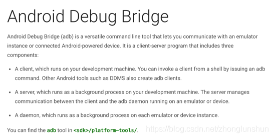
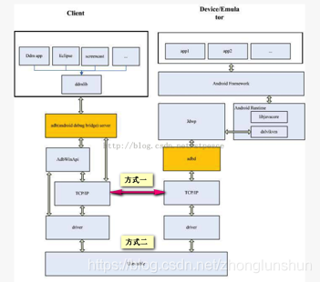
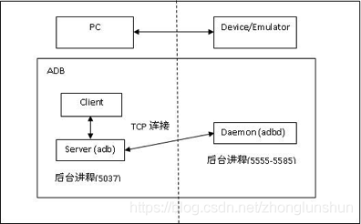

玩转ADB命令（ADB命令使用大全）
ADB是什么
Adb的全称为Android Debug Bridge：android调试桥梁，下图为Android官方对adb的介绍：

可以看出，Android的初衷是用adb这样的一个工具来协助开发人员在开发android应用的过程中更快更好的调试apk，因此adb具有安装卸载apk、拷贝推送文件、查看设备硬件信息、查看应用程序占用资源、在设备执行shell命令等功能；
我们可以在android sdk安装目录的platform-tools目录下找到adb工具；
现有安卓系统的权限机制越来越完善，很多希望能够绕开权限管理机制进行的一些操作都已经无法使用，但是Adb却可以实现。实际上Adb在某种程度上有很大权限的，即使是在最新版本的Android系统上。因为Adb的设计初衷是为了方便开发人员调试，因此必然需要暴露一些权限以外的接口。于是很多公司利用这个特性可以绕开权限机制在非Root非定制机上做一些操作（具体用法就是下面说的这些），当然方式也是五花八门，比如通过手机OTG连接，这里不再赘述。
ADB架构
为了方便理解，我们从三个指令入手，我们经常会用到adb start-server，adb devices,adb kill-server。
然后我们经常会看到这样的输出界面：
C:\Users\dell>adb devices
List of devices attached
* daemon not running. starting it now at tcp:5037 *
* daemon started successfully *
- 1
- 2
- 3
- 4
于是这里有三点疑问，为什么是server，server对应的是服务器或者服务端吧？如果手机是客户端，服务端是不是指电脑上开启的服务。还有这个呆萌（daemon ）又是啥？
ADB是一个C/S架构的应用程序，由三部分组成：
- 运行在pc端的adb client：
命令行程序”adb”用于从shell或脚本中运行adb命令。首先，“adb”程序尝试定位主机上的ADB服务器，如果找不到ADB服务器，“adb”程序自动启动一个ADB服务器。接下来，当设备的adbd和pc端的adb server建立连接后，adb client就可以向ADB servcer发送服务请求； - 运行在pc端的adb server：
ADB Server是运行在主机上的一个后台进程。它的作用在于检测USB端口感知设备的连接和拔除，以及模拟器实例的启动或停止，ADB Server还需要将adb client的请求通过usb或者tcp的方式发送到对应的adbd上； - 运行在设备端的常驻进程adb demon (adbd)：
程序“adbd”作为一个后台进程在Android设备或模拟器系统中运行。它的作用是连接ADB服务器，并且为运行在主机上的客户端提供一些服务；


ADB端口被占用
有小伙伴说希望我把Adb启动问题放在最前面，因为他经常遇到adb找不到设备的问题，那我就放到前面吧，我想肯定不止是她一个人会遇到这种情况。
5037为adb默认端口，若5037端口被占用，则我们在使用Adb命令的时候会因为找不到设备而困扰，这个问题对于Adb不是很熟悉的小伙伴来说会经常遇到，因此我就把这个用法放在文章开头了，以便于小伙伴能方便找到；
解决这种端口占用的问题思路都是一样的，三步走：
- 找到使用该端口的进程Pid；
C:\Windows\system32>netstat -aon|findstr 5037
TCP 127.0.0.1:5037 0.0.0.0:0 LISTENING 3172
- 1
- 2
- 通过PID找到对应的进程名（便于定位，可以跳过）；
C:\Windows\system32>tasklist /fi "PID eq 3172"
映像名称 PID 会话名 会话# 内存使用
========================= ======== ================ =========== ============
360MobileLink.exe 3172 Console 4 40,208 K
- 1
- 2
- 3
- 4
- 5
- 使用命令终止该命令的运行；
C:\Users\wwx229495>taskkill /pid 3172 /f
成功: 已终止 PID 为 3172 的进程。
- 1
- 2
有些时候，一些流氓程序会复制一份Adb.exe到windows环境变量中，比如C://Windows/system32，这个时候我们可以使用Where
Adb 命令找出来adb所在的路径并删除。
基本用法
adb能做什么?答案是所有能对手机的操作都能用adb实现。也就是说如果你玩的6，你就是触摸屏完全坏了，显示屏完全坏了，就只是给你一个主板，你照样能完成你要做的动作。当然在一般场景不推荐这样做，效率优先嘛。
接下来的内容是转自github上一位大牛的博客，如有侵权请告知，立即删除；
后期
命令语法
adb 命令的基本语法如下：
adb [-d|-e|-s ]
如果只有一个设备/模拟器连接时，可以省略掉 [-d|-e|-s ] 这一部分，直接使用 adb 。
为命令指定目标设备
如果有多个设备/模拟器连接，则需要为命令指定目标设备。
| 参数 | 含义 |
|---|---|
| -d | 指定当前唯一通过 USB 连接的 Android 设备为命令目标 |
| -e | 指定当前唯一运行的模拟器为命令目标 |
-s <serialNumber> | 指定相应 serialNumber 号的设备/模拟器为命令目标 |
在多个设备/模拟器连接的情况下较常用的是 -s 参数，serialNumber 可以通过 adb devices 命令获取。如：
$ adb devices
List of devices attached
cf264b8f device
emulator-5554 device
10.129.164.6:5555 device
- 1
- 2
- 3
- 4
- 5
- 6
输出里的 cf264b8f、emulator-5554 和 10.129.164.6:5555 即为 serialNumber。
比如这时想指定 cf264b8f 这个设备来运行 adb 命令获取屏幕分辨率：
adb -s cf264b8f shell wm size
- 1
又如想给 10.129.164.6:5555 这个设备安装应用（这种形式的 serialNumber 格式为 :，一般为无线连接的设备或 Genymotion 等第三方 Android 模拟器）：
adb -s 10.129.164.6:5555 install test.apk
- 1
遇到多设备/模拟器的情况均使用这几个参数为命令指定目标设备，下文中为简化描述，不再重复。
启动/停止
启动 adb server 命令：
adb start-server
- 1
（一般无需手动执行此命令，在运行 adb 命令时若发现 adb server 没有启动会自动调起。）
停止 adb server 命令：
adb kill-server
- 1
查看 adb 版本
adb version
- 1
示例输出
Android Debug Bridge version 1.0.36
Revision 8f855a3d9b35-android
- 1
- 2
以 root 权限运行 adbd
adb 的运行原理是 PC 端的 adb server 与手机端的守护进程 adbd 建立连接，然后 PC 端的 adb client 通过 adb server 转发命令，adbd 接收命令后解析运行。
所以如果 adbd 以普通权限执行，有些需要 root 权限才能执行的命令无法直接用 adb xxx 执行。这时可以 adb shell 然后 su 后执行命令，也可以让 adbd 以 root 权限执行，这个就能随意执行高权限命令了。
命令：
adb root
- 1
正常输出：
restarting adbd as root
- 1
现在再运行 adb shell，看看命令行提示符是不是变成 # 了？
有些手机 root 后也无法通过 adb root 命令让 adbd 以 root 权限执行，比如三星的部分机型，会提示 adbd cannot run as root in production builds，此时可以先安装 adbd Insecure，然后 adb root 试试。
相应地，如果要恢复 adbd 为非 root 权限的话，可以使用 adb unroot 命令。
指定 adb server 的网络端口
adb -P <port> start-server
- 1
默认端口为 5037。
设备连接管理
查询已连接设备/模拟器
命令：
adb devices
- 1
输出示例：
List of devices attached
cf264b8f device
emulator-5554 device
10.129.164.6:5555 device
- 1
- 2
- 3
- 4
输出格式为 [serialNumber] [state]，serialNumber 即我们常说的 SN，state 有如下几种：
offline —— 表示设备未连接成功或无响应。
device —— 设备已连接。注意这个状态并不能标识 Android 系统已经完全启动和可操作，在设备启动过程中设备实例就可连接到 adb，但启动完毕后系统才处于可操作状态。
no device —— 没有设备/模拟器连接。
以上输出显示当前已经连接了三台设备/模拟器，cf264b8f、emulator-5554 和 10.129.164.6:5555 分别是它们的 SN。从 emulator-5554 这个名字可以看出它是一个 Android 模拟器，而 10.129.164.6:5555 这种形为 : 的 serialNumber 一般是无线连接的设备或 Genymotion 等第三方 Android 模拟器。
常见异常输出：
没有设备/模拟器连接成功。
List of devices attached
设备/模拟器未连接到 adb 或无响应。
List of devices attached
cf264b8f offline
USB 连接
通过 USB 连接来正常使用 adb 需要保证几点：
硬件状态正常。
包括 Android 设备处于正常开机状态，USB 连接线和各种接口完好。
Android 设备的开发者选项和 USB 调试模式已开启。
可以到「设置」-「开发者选项」-「Android 调试」查看。
如果在设置里找不到开发者选项，那需要通过一个彩蛋来让它显示出来：在「设置」-「关于手机」连续点击「版本号」7 次。
设备驱动状态正常。
这一点貌似在 Linux 和 Mac OS X 下不用操心，在 Windows 下有可能遇到需要安装驱动的情况，确认这一点可以右键「计算机」-「属性」，到「设备管理器」里查看相关设备上是否有黄色感叹号或问号，如果没有就说明驱动状态已经好了。否则可以下载一个手机助手类程序来安装驱动先。
通过 USB 线连接好电脑和设备后确认状态。
adb devices
- 1
如果能看到
xxxxxx device
说明连接成功。
无线连接（需要借助 USB 线）
除了可以通过 USB 连接设备与电脑来使用 adb，也可以通过无线连接——虽然连接过程中也有需要使用 USB 的步骤，但是连接成功之后你的设备就可以在一定范围内摆脱 USB 连接线的限制啦！
操作步骤：
将 Android 设备与要运行 adb 的电脑连接到同一个局域网，比如连到同一个 WiFi。
将设备与电脑通过 USB 线连接。
应确保连接成功（可运行 adb devices 看是否能列出该设备）。
让设备在 5555 端口监听 TCP/IP 连接：
adb tcpip 5555
- 1
断开 USB 连接。
找到设备的 IP 地址。
一般能在「设置」-「关于手机」-「状态信息」-「IP地址」找到，也可以使用下文里 查看设备信息 - IP 地址 一节里的方法用 adb 命令来查看。
通过 IP 地址连接设备。
adb connect <device-ip-address>
- 1
这里的 就是上一步中找到的设备 IP 地址。
确认连接状态。
adb devices
- 1
如果能看到
<device-ip-address>:5555 device
- 1
说明连接成功。
如果连接不了，请确认 Android 设备与电脑是连接到了同一个 WiFi，然后再次执行 adb connect <device-ip-address> 那一步；
如果还是不行的话，通过 adb kill-server 重新启动 adb 然后从头再来一次试试。
断开无线连接
命令：
adb disconnect <device-ip-address>
- 1
无线连接（无需借助 USB 线）
注：需要 root 权限。
上一节「无线连接（需要借助 USB 线）」是官方文档里介绍的方法，需要借助于 USB 数据线来实现无线连接。
既然我们想要实现无线连接，那能不能所有步骤下来都是无线的呢？答案是能的。
在 Android 设备上安装一个终端模拟器。
已经安装过的设备可以跳过此步。我使用的终端模拟器下载地址是：Terminal Emulator for Android Downloads
将 Android 设备与要运行 adb 的电脑连接到同一个局域网，比如连到同一个 WiFi。
打开 Android 设备上的终端模拟器，在里面依次运行命令：
su
setprop service.adb.tcp.port 5555
- 1
- 2
找到 Android 设备的 IP 地址。
一般能在「设置」-「关于手机」-「状态信息」-「IP地址」找到，也可以使用下文里 查看设备信息 - IP 地址 一节里的方法用 adb 命令来查看。
在电脑上通过 adb 和 IP 地址连接 Android 设备。
adb connect <device-ip-address>
- 1
这里的 就是上一步中找到的设备 IP 地址。
如果能看到 connected to :5555 这样的输出则表示连接成功。
节注一：
有的设备，比如小米 5S + MIUI 8.0 + Android 6.0.1 MXB48T，可能在第 5 步之前需要重启 adbd 服务，在设备的终端模拟器上运行：
restart adbd
- 1
如果 restart 无效，尝试以下命令：
stop adbd
start adbd
- 1
- 2
应用管理
查看应用列表
查看应用列表的基本命令格式是
adb shell pm list packages [-f] [-d] [-e] [-s] [-3] [-i] [-u] [--user USER_ID] [FILTER]
- 1
即在 adb shell pm list packages 的基础上可以加一些参数进行过滤查看不同的列表，支持的过滤参数如下：
| 参数 | 显示列表 |
|---|---|
| 无 | 所有应用 |
| -f | 显示应用关联的 apk 文件 |
| -d | 只显示 disabled 的应用 |
| -e | 只显示 enabled 的应用 |
| -s | 只显示系统应用 |
| -3 | 只显示第三方应用 |
| -i | 显示应用的 installer |
| -u | 包含已卸载应用 |
<FILTER> | 包名包含 <FILTER> 字符串 |
所有应用
命令：
adb shell pm list packages
- 1
输出示例：
package:com.android.smoketest
package:com.example.android.livecubes
package:com.android.providers.telephony
package:com.google.android.googlequicksearchbox
package:com.android.providers.calendar
package:com.android.providers.media
package:com.android.protips
package:com.android.documentsui
package:com.android.gallery
package:com.android.externalstorage
...
// other packages here
...
- 1
- 2
- 3
- 4
- 5
- 6
- 7
- 8
- 9
- 10
- 11
- 12
- 13
系统应用
命令：
adb shell pm list packages -s
- 1
第三方应用
命令：
adb shell pm list packages -3
- 1
包名包含某字符串的应用
比如要查看包名包含字符串 mazhuang 的应用列表，命令：
adb shell pm list packages mazhuang
- 1
当然也可以使用 grep 来过滤：
adb shell pm list packages | grep mazhuang
- 1
安装 APK
命令格式：
adb install [-lrtsdg] <path_to_apk>
- 1
参数：
adb install 后面可以跟一些可选参数来控制安装 APK 的行为，可用参数及含义如下：
| 参数 | 含义 |
|---|---|
| -l | 将应用安装到保护目录 /mnt/asec |
| -r | 允许覆盖安装 |
| -t | 允许安装 AndroidManifest.xml 里 application 指定 android:testOnly="true" 的应用 |
| -s | 将应用安装到 sdcard |
| -d | 允许降级覆盖安装 |
| -g | 授予所有运行时权限 |
运行命令后如果见到类似如下输出（状态为 Success）代表安装成功：
[100%] /data/local/tmp/1.apk
pkg: /data/local/tmp/1.apk
Success
- 1
- 2
- 3
上面是当前最新版 v1.0.36 的 adb 的输出，会显示 push apk 文件到手机的进度百分比。
使用旧版本 adb 的输出则是这样的：
12040 KB/s (22205609 bytes in 1.801s)
pkg: /data/local/tmp/SogouInput_android_v8.3_sweb.apk
Success
- 1
- 2
- 3
而如果状态为 Failure 则表示安装失败，比如：
[100%] /data/local/tmp/map-20160831.apk
pkg: /data/local/tmp/map-20160831.apk
Failure [INSTALL_FAILED_ALREADY_EXISTS]
- 1
- 2
- 3
常见安装失败输出代码、含义及可能的解决办法如下：
| 输出 | 含义 | 解决办法 |
|---|---|---|
| INSTALL_FAILED_ALREADY_EXISTS | 应用已经存在，或卸载了但没卸载干净 | adb install 时使用 -r 参数，或者先 adb uninstall <packagename> 再安装 |
| INSTALL_FAILED_INVALID_APK | 无效的 APK 文件 | |
| INSTALL_FAILED_INVALID_URI | 无效的 APK 文件名 | 确保 APK 文件名里无中文 |
| INSTALL_FAILED_INSUFFICIENT_STORAGE | 空间不足 | 清理空间 |
| INSTALL_FAILED_DUPLICATE_PACKAGE | 已经存在同名程序 | |
| INSTALL_FAILED_NO_SHARED_USER | 请求的共享用户不存在 | |
| INSTALL_FAILED_UPDATE_INCOMPATIBLE | 以前安装过同名应用，但卸载时数据没有移除；或者已安装该应用，但签名不一致 | 先 adb uninstall <packagename> 再安装 |
| INSTALL_FAILED_SHARED_USER_INCOMPATIBLE | 请求的共享用户存在但签名不一致 | |
| INSTALL_FAILED_MISSING_SHARED_LIBRARY | 安装包使用了设备上不可用的共享库 | |
| INSTALL_FAILED_REPLACE_COULDNT_DELETE | 替换时无法删除 | |
| INSTALL_FAILED_DEXOPT | dex 优化验证失败或空间不足 | |
| INSTALL_FAILED_OLDER_SDK | 设备系统版本低于应用要求 | |
| INSTALL_FAILED_CONFLICTING_PROVIDER | 设备里已经存在与应用里同名的 content provider | |
| INSTALL_FAILED_NEWER_SDK | 设备系统版本高于应用要求 | |
| INSTALL_FAILED_TEST_ONLY | 应用是 test-only 的，但安装时没有指定 -t 参数 | |
| INSTALL_FAILED_CPU_ABI_INCOMPATIBLE | 包含不兼容设备 CPU 应用程序二进制接口的 native code | |
| INSTALL_FAILED_MISSING_FEATURE | 应用使用了设备不可用的功能 | |
| INSTALL_FAILED_CONTAINER_ERROR | 1. sdcard 访问失败; 2. 应用签名与 ROM 签名一致，被当作内置应用。 | 1. 确认 sdcard 可用，或者安装到内置存储; 2. 打包时不与 ROM 使用相同签名。 |
| INSTALL_FAILED_INVALID_INSTALL_LOCATION | 1. 不能安装到指定位置; 2. 应用签名与 ROM 签名一致，被当作内置应用。 | 1. 切换安装位置，添加或删除 -s 参数;2. 打包时不与 ROM 使用相同签名。 |
| INSTALL_FAILED_MEDIA_UNAVAILABLE | 安装位置不可用 | 一般为 sdcard，确认 sdcard 可用或安装到内置存储 |
| INSTALL_FAILED_VERIFICATION_TIMEOUT | 验证安装包超时 | |
| INSTALL_FAILED_VERIFICATION_FAILURE | 验证安装包失败 | |
| INSTALL_FAILED_PACKAGE_CHANGED | 应用与调用程序期望的不一致 | |
| INSTALL_FAILED_UID_CHANGED | 以前安装过该应用，与本次分配的 UID 不一致 | 清除以前安装过的残留文件 |
| INSTALL_FAILED_VERSION_DOWNGRADE | 已经安装了该应用更高版本 | 使用 -d 参数 |
| INSTALL_FAILED_PERMISSION_MODEL_DOWNGRADE | 已安装 target SDK 支持运行时权限的同名应用，要安装的版本不支持运行时权限 | |
| INSTALL_PARSE_FAILED_NOT_APK | 指定路径不是文件，或不是以 .apk 结尾 | |
| INSTALL_PARSE_FAILED_BAD_MANIFEST | 无法解析的 AndroidManifest.xml 文件 | |
| INSTALL_PARSE_FAILED_UNEXPECTED_EXCEPTION | 解析器遇到异常 | |
| INSTALL_PARSE_FAILED_NO_CERTIFICATES | 安装包没有签名 | |
| INSTALL_PARSE_FAILED_INCONSISTENT_CERTIFICATES | 已安装该应用，且签名与 APK 文件不一致 | 先卸载设备上的该应用，再安装 |
| INSTALL_PARSE_FAILED_CERTIFICATE_ENCODING | 解析 APK 文件时遇到 CertificateEncodingException | |
| INSTALL_PARSE_FAILED_BAD_PACKAGE_NAME | manifest 文件里没有或者使用了无效的包名 | |
| INSTALL_PARSE_FAILED_BAD_SHARED_USER_ID | manifest 文件里指定了无效的共享用户 ID | |
| INSTALL_PARSE_FAILED_MANIFEST_MALFORMED | 解析 manifest 文件时遇到结构性错误 | |
| INSTALL_PARSE_FAILED_MANIFEST_EMPTY | 在 manifest 文件里找不到找可操作标签（instrumentation 或 application） | |
| INSTALL_FAILED_INTERNAL_ERROR | 因系统问题安装失败 | |
| INSTALL_FAILED_USER_RESTRICTED | 用户被限制安装应用 | |
| INSTALL_FAILED_DUPLICATE_PERMISSION | 应用尝试定义一个已经存在的权限名称 | |
| INSTALL_FAILED_NO_MATCHING_ABIS | 应用包含设备的应用程序二进制接口不支持的 native code | |
| INSTALL_CANCELED_BY_USER | 应用安装需要在设备上确认，但未操作设备或点了取消 | 在设备上同意安装 |
| INSTALL_FAILED_ACWF_INCOMPATIBLE | 应用程序与设备不兼容 | |
| does not contain AndroidManifest.xml | 无效的 APK 文件 | |
| is not a valid zip file | 无效的 APK 文件 | |
| Offline | 设备未连接成功 | 先将设备与 adb 连接成功 |
| unauthorized | 设备未授权允许调试 | |
| error: device not found | 没有连接成功的设备 | 先将设备与 adb 连接成功 |
| protocol failure | 设备已断开连接 | 先将设备与 adb 连接成功 |
| Unknown option: -s | Android 2.2 以下不支持安装到 sdcard | 不使用 -s 参数 |
| No space left on device | 空间不足 | 清理空间 |
| Permission denied ... sdcard ... | sdcard 不可用 | |
| signatures do not match the previously installed version; ignoring! | 已安装该应用且签名不一致 | 先卸载设备上的该应用，再安装 |
adb install 内部原理简介
adb install 实际是分三步完成：
- push apk 文件到 /data/local/tmp。
- 调用 pm install 安装。
- 删除 /data/local/tmp 下的对应 apk 文件。
所以，必要的时候也可以根据这个步骤，手动分步执行安装过程。
卸载应用
命令：
adb uninstall [-k] <packagename>
- 1
<packagename> 表示应用的包名，-k 参数可选，表示卸载应用但保留数据和缓存目录。
命令示例：
adb uninstall com.qihoo360.mobilesafe
- 1
表示卸载 360 手机卫士。
清除应用数据与缓存
命令：
adb shell pm clear <packagename>
- 1
<packagename> 表示应用名包，这条命令的效果相当于在设置里的应用信息界面点击了「清除缓存」和「清除数据」。
命令示例：
adb shell pm clear com.qihoo360.mobilesafe
- 1
表示清除 360 手机卫士的数据和缓存。
查看前台 Activity
命令：
adb shell dumpsys activity activities | grep mFocusedActivity
- 1
输出示例：
mFocusedActivity: ActivityRecord{8079d7e u0 com.cyanogenmod.trebuchet/com.android.launcher3.Launcher t42}
- 1
其中的 com.cyanogenmod.trebuchet/com.android.launcher3.Launcher 就是当前处于前台的 Activity。
查看正在运行的 Services
命令：
adb shell dumpsys activity services [<packagename>]
- 1
<packagename> 参数不是必须的，指定 <packagename> 表示查看与某个包名相关的 Services，不指定表示查看所有 Services。
<packagename> 不一定要给出完整的包名，比如运行 adb shell dumpsys activity services org.mazhuang，那么包名 org.mazhuang.demo1、org.mazhuang.demo2 和 org.mazhuang123 等相关的 Services 都会列出来。
查看应用详细信息
命令：
adb shell dumpsys package <packagename>
- 1
输出中包含很多信息，包括 Activity Resolver Table、Registered ContentProviders、包名、userId、安装后的文件资源代码等路径、版本信息、权限信息和授予状态、签名版本信息等。
<packagename> 表示应用包名。
输出示例：
Activity Resolver Table:
Non-Data Actions:
android.intent.action.MAIN:
5b4cba8 org.mazhuang.guanggoo/.SplashActivity filter 5ec9dcc
Action: "android.intent.action.MAIN"
Category: "android.intent.category.LAUNCHER"
AutoVerify=false
Registered ContentProviders:
org.mazhuang.guanggoo/com.tencent.bugly.beta.utils.BuglyFileProvider:
Provider{7a3c394 org.mazhuang.guanggoo/com.tencent.bugly.beta.utils.BuglyFileProvider}
ContentProvider Authorities:
[org.mazhuang.guanggoo.fileProvider]:
Provider{7a3c394 org.mazhuang.guanggoo/com.tencent.bugly.beta.utils.BuglyFileProvider}
applicationInfo=ApplicationInfo{7754242 org.mazhuang.guanggoo}
Key Set Manager:
[org.mazhuang.guanggoo]
Signing KeySets: 501
Packages:
Package [org.mazhuang.guanggoo] (c1d7f):
userId=10394
pkg=Package{55f714c org.mazhuang.guanggoo}
codePath=/data/app/org.mazhuang.guanggoo-2
resourcePath=/data/app/org.mazhuang.guanggoo-2
legacyNativeLibraryDir=/data/app/org.mazhuang.guanggoo-2/lib
primaryCpuAbi=null
secondaryCpuAbi=null
versionCode=74 minSdk=15 targetSdk=25
versionName=1.1.74
splits=[base]
apkSigningVersion=2
applicationInfo=ApplicationInfo{7754242 org.mazhuang.guanggoo}
flags=[ HAS_CODE ALLOW_CLEAR_USER_DATA ALLOW_BACKUP ]
privateFlags=[ RESIZEABLE_ACTIVITIES ]
dataDir=/data/user/0/org.mazhuang.guanggoo
supportsScreens=[small, medium, large, xlarge, resizeable, anyDensity]
timeStamp=2017-10-22 23:50:53
firstInstallTime=2017-10-22 23:50:25
lastUpdateTime=2017-10-22 23:50:55
installerPackageName=com.miui.packageinstaller
signatures=PackageSignatures{af09595 [53c7caa2]}
installPermissionsFixed=true installStatus=1
pkgFlags=[ HAS_CODE ALLOW_CLEAR_USER_DATA ALLOW_BACKUP ]
requested permissions:
android.permission.READ_PHONE_STATE
android.permission.INTERNET
android.permission.ACCESS_NETWORK_STATE
android.permission.ACCESS_WIFI_STATE
android.permission.READ_LOGS
android.permission.WRITE_EXTERNAL_STORAGE
android.permission.READ_EXTERNAL_STORAGE
install permissions:
android.permission.INTERNET: granted=true
android.permission.ACCESS_NETWORK_STATE: granted=true
android.permission.ACCESS_WIFI_STATE: granted=true
User 0: ceDataInode=1155675 installed=true hidden=false suspended=false stopped=true notLaunched=false enabled=0
gids=[3003]
runtime permissions:
android.permission.READ_EXTERNAL_STORAGE: granted=true
android.permission.READ_PHONE_STATE: granted=true
android.permission.WRITE_EXTERNAL_STORAGE: granted=true
User 999: ceDataInode=0 installed=false hidden=false suspended=false stopped=true notLaunched=true enabled=0
gids=[3003]
runtime permissions:
Dexopt state:
[org.mazhuang.guanggoo]
Instruction Set: arm64
path: /data/app/org.mazhuang.guanggoo-2/base.apk
status: /data/app/org.mazhuang.guanggoo-2/oat/arm64/base.odex [compilation_filter=speed-profile, status=kOatUpToDa
te]
- 1
- 2
- 3
- 4
- 5
- 6
- 7
- 8
- 9
- 10
- 11
- 12
- 13
- 14
- 15
- 16
- 17
- 18
- 19
- 20
- 21
- 22
- 23
- 24
- 25
- 26
- 27
- 28
- 29
- 30
- 31
- 32
- 33
- 34
- 35
- 36
- 37
- 38
- 39
- 40
- 41
- 42
- 43
- 44
- 45
- 46
- 47
- 48
- 49
- 50
- 51
- 52
- 53
- 54
- 55
- 56
- 57
- 58
- 59
- 60
- 61
- 62
- 63
- 64
- 65
- 66
- 67
- 68
- 69
- 70
- 71
- 72
- 73
- 74
- 75
与应用交互
主要是使用 am <command> 命令，常用的 <command> 如下：
| command | 用途 |
|---|---|
start [options] <INTENT> | 启动 <INTENT> 指定的 Activity |
startservice [options] <INTENT> | 启动 <INTENT> 指定的 Service |
broadcast [options] <INTENT> | 发送 <INTENT> 指定的广播 |
force-stop <packagename> | 停止 <packagename> 相关的进程 |
<INTENT> 参数很灵活，和写 Android 程序时代码里的 Intent 相对应。
用于决定 intent 对象的选项如下：
| 参数 | 含义 |
|---|---|
-a <ACTION> | 指定 action，比如 android.intent.action.VIEW |
-c <CATEGORY> | 指定 category，比如 android.intent.category.APP_CONTACTS |
-n <COMPONENT> | 指定完整 component 名，用于明确指定启动哪个 Activity，如 com.example.app/.ExampleActivity |
<INTENT> 里还能带数据，就像写代码时的 Bundle 一样：
| 参数 | 含义 |
|---|---|
--esn <EXTRA_KEY> | null 值（只有 key 名） |
| `-e | --es <EXTRA_KEY> <EXTRA_STRING_VALUE>` |
--ez <EXTRA_KEY> <EXTRA_BOOLEAN_VALUE> | boolean 值 |
--ei <EXTRA_KEY> <EXTRA_INT_VALUE> | integer 值 |
--el <EXTRA_KEY> <EXTRA_LONG_VALUE> | long 值 |
--ef <EXTRA_KEY> <EXTRA_FLOAT_VALUE> | float 值 |
--eu <EXTRA_KEY> <EXTRA_URI_VALUE> | URI |
--ecn <EXTRA_KEY> <EXTRA_COMPONENT_NAME_VALUE> | component name |
--eia <EXTRA_KEY> <EXTRA_INT_VALUE>[,<EXTRA_INT_VALUE...] | integer 数组 |
--ela <EXTRA_KEY> <EXTRA_LONG_VALUE>[,<EXTRA_LONG_VALUE...] | long 数组 |
调起 Activity
命令格式：
adb shell am start [options] <INTENT>
- 1
例如：
adb shell am start -n com.tencent.mm/.ui.LauncherUI
- 1
表示调起微信主界面。
adb shell am start -n org.mazhuang.boottimemeasure/.MainActivity --es "toast" "hello, world"
- 1
表示调起 org.mazhuang.boottimemeasure/.MainActivity 并传给它 string 数据键值对 toast - hello, world。
调起 Service
命令格式：
adb shell am startservice [options] <INTENT>
- 1
例如：
adb shell am startservice -n com.tencent.mm/.plugin.accountsync.model.AccountAuthenticatorService
- 1
表示调起微信的某 Service。
发送广播
命令格式：
adb shell am broadcast [options] <INTENT>
- 1
可以向所有组件广播，也可以只向指定组件广播。
例如，向所有组件广播 BOOT_COMPLETED：
adb shell am broadcast -a android.intent.action.BOOT_COMPLETED
- 1
又例如，只向 org.mazhuang.boottimemeasure/.BootCompletedReceiver 广播 BOOT_COMPLETED：
adb shell am broadcast -a android.intent.action.BOOT_COMPLETED -n org.mazhuang.boottimemeasure/.BootCompletedReceiver
- 1
这类用法在测试的时候很实用，比如某个广播的场景很难制造，可以考虑通过这种方式来发送广播。
既能发送系统预定义的广播，也能发送自定义广播。如下是部分系统预定义广播及正常触发时机：
| action | 触发时机 |
|---|---|
| android.net.conn.CONNECTIVITY_CHANGE | 网络连接发生变化 |
| android.intent.action.SCREEN_ON | 屏幕点亮 |
| android.intent.action.SCREEN_OFF | 屏幕熄灭 |
| android.intent.action.BATTERY_LOW | 电量低，会弹出电量低提示框 |
| android.intent.action.BATTERY_OKAY | 电量恢复了 |
| android.intent.action.BOOT_COMPLETED | 设备启动完毕 |
| android.intent.action.DEVICE_STORAGE_LOW | 存储空间过低 |
| android.intent.action.DEVICE_STORAGE_OK | 存储空间恢复 |
| android.intent.action.PACKAGE_ADDED | 安装了新的应用 |
| android.net.wifi.STATE_CHANGE | WiFi 连接状态发生变化 |
| android.net.wifi.WIFI_STATE_CHANGED | WiFi 状态变为启用/关闭/正在启动/正在关闭/未知 |
| android.intent.action.BATTERY_CHANGED | 电池电量发生变化 |
| android.intent.action.INPUT_METHOD_CHANGED | 系统输入法发生变化 |
| android.intent.action.ACTION_POWER_CONNECTED | 外部电源连接 |
| android.intent.action.ACTION_POWER_DISCONNECTED | 外部电源断开连接 |
| android.intent.action.DREAMING_STARTED | 系统开始休眠 |
| android.intent.action.DREAMING_STOPPED | 系统停止休眠 |
| android.intent.action.WALLPAPER_CHANGED | 壁纸发生变化 |
| android.intent.action.HEADSET_PLUG | 插入耳机 |
| android.intent.action.MEDIA_UNMOUNTED | 卸载外部介质 |
| android.intent.action.MEDIA_MOUNTED | 挂载外部介质 |
| android.os.action.POWER_SAVE_MODE_CHANGED | 省电模式开启 |
（以上广播均可使用 adb 触发）
强制停止应用
命令：
adb shell am force-stop <packagename>
- 1
命令示例：
adb shell am force-stop com.qihoo360.mobilesafe
- 1
表示停止 360 安全卫士的一切进程与服务。
禁用应用和启动
命令示例：
adb shell pm disable-user <packagename>
adb shell pm disable <packagename>
- 1
- 2
adb shell pm disable-user [options] <packagename>
- 1
命令示例：
adb shell pm enable <packagename>
- 1
撤消应用程序的权限
- 向应用授予权限。只能授予应用程序声明的可选权限
adb shell pm grant <packagename> <PACKAGE_PERMISSION>
- 1
例如：adb -d shell pm grant packageName android.permission.BATTERY_STATS
- 取消应用授权
adb shell pm revoke <packagename> <PACKAGE_PERMISSION>
- 1
选项--user user_id：要禁用的用户比如,向应用授予权限。在运行Android 6.0（API级别23）及更高版本的设备上，该权限可以是应用清单中声明的任何权限。在运行Android 5.1（API级别22）及更低版本的设备上，必须是应用程序定义的可选权限。
免责声明：以上命令为非常规命令，对于您的设备的任何损坏，强行停止等，我概不负责。您正在对您的设备执行此操作，您自己承担责任。
文件管理
复制设备里的文件到电脑
命令：
adb pull <设备里的文件路径> [电脑上的目录]
- 1
其中 电脑上的目录 参数可以省略，默认复制到当前目录。
例：
adb pull /sdcard/sr.mp4 ~/tmp/
- 1
*小技巧：*设备上的文件路径可能需要 root 权限才能访问，如果你的设备已经 root 过，可以先使用 adb shell 和 su 命令在 adb shell 里获取 root 权限后，先 cp /path/on/device /sdcard/filename 将文件复制到 sdcard，然后 adb pull /sdcard/filename /path/on/pc。
复制电脑里的文件到设备
命令：
adb push <电脑上的文件路径> <设备里的目录>
- 1
例：
adb push ~/sr.mp4 /sdcard/
- 1
*小技巧：*设备上的文件路径普通权限可能无法直接写入，如果你的设备已经 root 过，可以先 adb push /path/on/pc /sdcard/filename，然后 adb shell 和 su 在 adb shell 里获取 root 权限后，cp /sdcard/filename /path/on/device。
模拟按键/输入
在 adb shell 里有个很实用的命令叫 input，通过它可以做一些有趣的事情。
input 命令的完整 help 信息如下：
Usage: input [<source>] <command> [<arg>...]
The sources are:
mouse
keyboard
joystick
touchnavigation
touchpad
trackball
stylus
dpad
gesture
touchscreen
gamepad
The commands and default sources are:
text <string> (Default: touchscreen)
keyevent [--longpress] <key code number or name> ... (Default: keyboard)
tap <x> <y> (Default: touchscreen)
swipe <x1> <y1> <x2> <y2> [duration(ms)] (Default: touchscreen)
press (Default: trackball)
roll <dx> <dy> (Default: trackball)
- 1
- 2
- 3
- 4
- 5
- 6
- 7
- 8
- 9
- 10
- 11
- 12
- 13
- 14
- 15
- 16
- 17
- 18
- 19
- 20
- 21
- 22
比如模拟点击：//在屏幕上点击坐标点x=50 y=250的位置。
adb shell input tap 50 250
比如使用 adb shell input keyevent 命令，不同的 keycode 能实现不同的功能，完整的 keycode 列表详见 KeyEvent，摘引部分我觉得有意思的如下：
| keycode | 含义 |
|---|---|
| 3 | HOME 键 |
| 4 | 返回键 |
| 5 | 打开拨号应用 |
| 6 | 挂断电话 |
| 24 | 增加音量 |
| 25 | 降低音量 |
| 26 | 电源键 |
| 27 | 拍照（需要在相机应用里） |
| 64 | 打开浏览器 |
| 82 | 菜单键 |
| 85 | 播放/暂停 |
| 86 | 停止播放 |
| 87 | 播放下一首 |
| 88 | 播放上一首 |
| 122 | 移动光标到行首或列表顶部 |
| 123 | 移动光标到行末或列表底部 |
| 126 | 恢复播放 |
| 127 | 暂停播放 |
| 164 | 静音 |
| 176 | 打开系统设置 |
| 187 | 切换应用 |
| 207 | 打开联系人 |
| 208 | 打开日历 |
| 209 | 打开音乐 |
| 210 | 打开计算器 |
| 220 | 降低屏幕亮度 |
| 221 | 提高屏幕亮度 |
| 223 | 系统休眠 |
| 224 | 点亮屏幕 |
| 231 | 打开语音助手 |
| 276 | 如果没有 wakelock 则让系统休眠 |
下面是 input 命令的一些用法举例。
电源键
db shell input keyevent 26
- 1
执行效果相当于按电源键。
菜单键
命令：
adb shell input keyevent 82
- 1
HOME 键
命令：
adb shell input keyevent 3
- 1
返回键
命令：
adb shell input keyevent 4
- 1
音量控制
增加音量：
adb shell input keyevent 24
- 1
降低音量：
adb shell input keyevent 25
- 1
静音：
adb shell input keyevent 164
- 1
媒体控制
播放/暂停：
adb shell input keyevent 85
- 1
停止播放：
adb shell input keyevent 86
- 1
播放下一首：
adb shell input keyevent 87
- 1
播放上一首：
adb shell input keyevent 88
- 1
恢复播放：
adb shell input keyevent 126
- 1
暂停播放：
adb shell input keyevent 127
- 1
点亮/熄灭屏幕
可以通过上文讲述过的模拟电源键来切换点亮和熄灭屏幕，但如果明确地想要点亮或者熄灭屏幕，那可以使用如下方法。
点亮屏幕：
adb shell input keyevent 224
- 1
熄灭屏幕：
adb shell input keyevent 223
- 1
滑动解锁
如果锁屏没有密码，是通过滑动手势解锁，那么可以通过 input swipe 来解锁。
命令（参数以机型 Nexus 5，向上滑动手势解锁举例）：
adb shell input swipe 300 1000 300 500
- 1
参数 300 1000 300 500 分别表示起始点x坐标 起始点y坐标 结束点x坐标 结束点y坐标。
输入文本
在焦点处于某文本框时，可以通过 input 命令来输入文本。
命令：
adb shell input text hello
- 1
现在 hello 出现在文本框了。
查看日志
Android 系统的日志分为两部分，底层的 Linux 内核日志输出到 /proc/kmsg，Android 的日志输出到 /dev/log。
Android 日志
命令格式：
[adb] logcat [<option>] ... [<filter-spec>] ...
- 1
常用用法列举如下：
按级别过滤日志
Android 的日志分为如下几个优先级（priority）：
- V —— Verbose（最低，输出得最多）
- D —— Debug I —— Info
- W —— Warning
- E —— Error
- F—— Fatal
- S —— Silent（最高，啥也不输出）
按某级别过滤日志则会将该级别及以上的日志输出。
比如，命令：
adb logcat *:W
- 1
会将 Warning、Error、Fatal 和 Silent 日志输出。
（注： 在 macOS 下需要给 :W 这样以 * 作为 tag 的参数加双引号，如 adb logcat ":W"，不然会报错 no matches found: *:W。）
按 tag 和级别过滤日志
<filter-spec> 可以由多个 <tag>[:priority] 组成。
比如，命令：
adb logcat ActivityManager:I MyApp:D *:S
- 1
表示输出 tag ActivityManager 的 Info 以上级别日志，输出 tag MyApp 的 Debug 以上级别日志，及其它 tag 的 Silent 级别日志（即屏蔽其它 tag 日志）。
日志格式
可以用 adb logcat -v <format> 选项指定日志输出格式。
日志支持按以下几种 <format>：
-
brief
默认格式。格式为：
<priority>/<tag>(<pid>): <message>- 1
示例：
D/HeadsetStateMachine( 1785): Disconnected process message: 10, size: 0
- 1
-
process
格式为：
<priority>(<pid>) <message>- 1
示例：
D( 1785) Disconnected process message: 10, size: 0 (HeadsetStateMachine)
- 1
-
tag
格式为：
<priority>/<tag>: <message>- 1
示例：
D/HeadsetStateMachine: Disconnected process message: 10, size: 0
- 1
-
raw
格式为：
<message>- 1
示例：
Disconnected process message: 10, size: 0- 1
-
time
格式为：
<datetime> <priority>/<tag>(<pid>): <message>- 1
示例：
08-28 22:39:39.974 D/HeadsetStateMachine( 1785): Disconnected process message: 10, size: 0- 1
-
threadtime
格式为：
<datetime> <pid> <tid> <priority> <tag>: <message>- 1
示例：
08-28 22:39:39.974 1785 1832 D HeadsetStateMachine: Disconnected process message: 10, size: 0- 1
-
long
格式为：
[ <datetime> <pid>:<tid> <priority>/<tag> ] <message>- 1
示例：
[ 08-28 22:39:39.974 1785: 1832 D/HeadsetStateMachine ] Disconnected process message: 10, size: 0
- 1
指定格式可与上面的过滤同时使用。比如：
adb logcat -v long ActivityManager:I *:S
- 1
清空日志
adb logcat -c
- 1
内核日志
命令：
adb shell dmesg
- 1
输出示例：
<6>[14201.684016] PM: noirq resume of devices complete after 0.982 msecs
<6>[14201.685525] PM: early resume of devices complete after 0.838 msecs
<6>[14201.753642] PM: resume of devices complete after 68.106 msecs
<4>[14201.755954] Restarting tasks ... done.
<6>[14201.771229] PM: suspend exit 2016-08-28 13:31:32.679217193 UTC
<6>[14201.872373] PM: suspend entry 2016-08-28 13:31:32.780363596 UTC
<6>[14201.872498] PM: Syncing filesystems ... done.
- 1
- 2
- 3
- 4
- 5
- 6
- 7
中括号里的 [14201.684016] 代表内核开始启动后的时间，单位为秒。
通过内核日志我们可以做一些事情，比如衡量内核启动时间，在系统启动完毕后的内核日志里找到 Freeing init memory 那一行前面的时间就是。
查看设备信息
型号
命令：
adb shell getprop ro.product.model
- 1
输出示例：
Nexus 5
电池状况
命令：
adb shell dumpsys battery
- 1
输入示例：
Current Battery Service state:
AC powered: false
USB powered: true
Wireless powered: false
status: 2
health: 2
present: true
level: 44
scale: 100
voltage: 3872
temperature: 280
technology: Li-poly
- 1
- 2
- 3
- 4
- 5
- 6
- 7
- 8
- 9
- 10
- 11
- 12
其中 scale 代表最大电量，level 代表当前电量。上面的输出表示还剩下 44% 的电量。
屏幕分辨率
命令：
adb shell wm size
- 1
输出示例：
Physical size: 1080x1920
- 1
该设备屏幕分辨率为 1080px * 1920px。
如果使用命令修改过，那输出可能是：
Physical size: 1080x1920
Override size: 480x1024
- 1
- 2
表明设备的屏幕分辨率原本是 1080px * 1920px，当前被修改为 480px * 1024px。
屏幕密度
命令：
adb shell wm density
输出示例：
Physical density: 420
该设备屏幕密度为 420dpi。
如果使用命令修改过，那输出可能是：
Physical density: 480
Override density: 160
表明设备的屏幕密度原来是 480dpi，当前被修改为 160dpi。
显示屏参数
命令：
adb shell dumpsys window displays
- 1
输出示例：
WINDOW MANAGER DISPLAY CONTENTS (dumpsys window displays)
Display: mDisplayId=0
init=1080x1920 420dpi cur=1080x1920 app=1080x1794 rng=1080x1017-1810x1731
deferred=false layoutNeeded=false
- 1
- 2
- 3
- 4
其中 mDisplayId 为 显示屏编号，init 是初始分辨率和屏幕密度，app 的高度比 init 里的要小，表示屏幕底部有虚拟按键，高度为 1920 - 1794 = 126px 合 42dp。
android_id
命令：
adb shell settings get secure android_id
- 1
输出示例：
51b6be48bac8c569
- 1
IMEI
在 Android 4.4 及以下版本可通过如下命令获取 IMEI：
adb shell dumpsys iphonesubinfo
- 1
输出示例：
Phone Subscriber Info:
Phone Type = GSM
Device ID = 860955027785041
其中的 Device ID 就是 IMEI。
- 1
- 2
- 3
- 4
而在 Android 5.0 及以上版本里这个命令输出为空，得通过其它方式获取了（需要 root 权限）：
adb shell
su
service call iphonesubinfo 1
- 1
- 2
- 3
输出示例：
Result: Parcel(
0x00000000: 00000000 0000000f 00360038 00390030 '........8.6.0.9.'
0x00000010: 00350035 00320030 00370037 00350038 '5.5.0.2.7.7.8.5.'
0x00000020: 00340030 00000031 '0.4.1... ')
- 1
- 2
- 3
- 4
把里面的有效内容提取出来就是 IMEI 了，比如这里的是 860955027785041。
参考：adb shell dumpsys iphonesubinfo not working since Android 5.0 Lollipop
Android 系统版本
命令：
adb shell getprop ro.build.version.release
- 1
输出示例：
5.0.2
IP 地址
每次想知道设备的 IP 地址的时候都得「设置」-「关于手机」-「状态信息」-「IP地址」很烦对不对？通过 adb 可以方便地查看。
命令：
adb shell ifconfig "| grep Mask"
- 1
输出示例：
inet addr:10.130.245.230 Mask:255.255.255.252
inet addr:127.0.0.1 Mask:255.0.0.0
- 1
- 2
那么 10.130.245.230 就是设备 IP 地址。
在有的设备上这个命令没有输出，如果设备连着 WiFi，可以使用如下命令来查看局域网 adb shell ifconfig wlan0例：
wlan0: ip 10.129.160.99 mask 255.255.240.0 flags [up broadcast running multicast]
- 1
或
wlan0 Link encap:UNSPEC
inet addr:10.129.168.57 Bcast:10.129.175.255 Mask:255.255.240.0
inet6 addr: fe80::66cc:2eff:fe68:b6b6/64 Scope: Link
UP BROADCAST RUNNING MULTICAST MTU:1500 Metric:1
RX packets:496520 errors:0 dropped:0 overruns:0 frame:0
TX packets:68215 errors:0 dropped:0 overruns:0 carrier:0
collisions:0 txqueuelen:3000
RX bytes:116266821 TX bytes:8311736
- 1
- 2
- 3
- 4
- 5
- 6
- 7
- 8
如果以上命令仍然不能得到期望的信息，那可以试试以下命令（部分系统版本里可用）：
adb shell netcfg
- 1
输出示例：
wlan0 UP 10.129.160.99/20 0x00001043 f8:a9:d0:17:42:4d
lo UP 127.0.0.1/8 0x00000049 00:00:00:00:00:00
p2p0 UP 0.0.0.0/0 0x00001003 fa:a9:d0:17:42:4d
sit0 DOWN 0.0.0.0/0 0x00000080 00:00:00:00:00:00
rmnet0 DOWN 0.0.0.0/0 0x00000000 00:00:00:00:00:00
rmnet1 DOWN 0.0.0.0/0 0x00000000 00:00:00:00:00:00
rmnet3 DOWN 0.0.0.0/0 0x00000000 00:00:00:00:00:00
rmnet2 DOWN 0.0.0.0/0 0x00000000 00:00:00:00:00:00
rmnet4 DOWN 0.0.0.0/0 0x00000000 00:00:00:00:00:00
rmnet6 DOWN 0.0.0.0/0 0x00000000 00:00:00:00:00:00
rmnet5 DOWN 0.0.0.0/0 0x00000000 00:00:00:00:00:00
rmnet7 DOWN 0.0.0.0/0 0x00000000 00:00:00:00:00:00
rev_rmnet3 DOWN 0.0.0.0/0 0x00001002 4e:b7:e4:2e:17:58
rev_rmnet2 DOWN 0.0.0.0/0 0x00001002 4e:f0:c8:bf:7a:cf
rev_rmnet4 DOWN 0.0.0.0/0 0x00001002 a6:c0:3b:6b:c4:1f
rev_rmnet6 DOWN 0.0.0.0/0 0x00001002 66:bb:5d:64:2e:e9
rev_rmnet5 DOWN 0.0.0.0/0 0x00001002 0e:1b:eb:b9:23:a0
rev_rmnet7 DOWN 0.0.0.0/0 0x00001002 7a:d9:f6:81:40:5a
rev_rmnet8 DOWN 0.0.0.0/0 0x00001002 4e:e2:a9:bb:d0:1b
rev_rmnet0 DOWN 0.0.0.0/0 0x00001002 fe:65:d0:ca:82:a9
rev_rmnet1 DOWN 0.0.0.0/0 0x00001002 da:d8:e8:4f:2e:fe
- 1
- 2
- 3
- 4
- 5
- 6
- 7
- 8
- 9
- 10
- 11
- 12
- 13
- 14
- 15
- 16
- 17
- 18
- 19
- 20
- 21
可以看到网络连接名称、启用状态、IP 地址和 Mac 地址等信息。
Mac 地址
命令：
adb shell cat /sys/class/net/wlan0/address
- 1
输出示例：
f8:a9:d0:17:42:4d
- 1
这查看的是局域网 Mac 地址，移动网络或其它连接的信息可以通过前面的小节「IP 地址」里提到的 adb shell netcfg 命令来查看。
CPU 信息
命令：
adb shell cat /proc/cpuinfo
- 1
输出示例：
Processor : ARMv7 Processor rev 0 (v7l)
processor : 0
BogoMIPS : 38.40
processor : 1
BogoMIPS : 38.40
processor : 2
BogoMIPS : 38.40
processor : 3
BogoMIPS : 38.40
Features : swp half thumb fastmult vfp edsp neon vfpv3 tls vfpv4 idiva idivt
CPU implementer : 0x51
CPU architecture: 7
CPU variant : 0x2
CPU part : 0x06f
CPU revision : 0
Hardware : Qualcomm MSM 8974 HAMMERHEAD (Flattened Device Tree)
Revision : 000b
Serial : 0000000000000000
- 1
- 2
- 3
- 4
- 5
- 6
- 7
- 8
- 9
- 10
- 11
- 12
- 13
- 14
- 15
- 16
- 17
- 18
- 19
- 20
- 21
- 22
- 23
这是 Nexus 5 的 CPU 信息，我们从输出里可以看到使用的硬件是 Qualcomm MSM 8974，processor 的编号是 0 到 3，所以它是四核的，采用的架构是 ARMv7 Processor rev 0 (v71)。
内存信息
命令：
adb shell cat /proc/meminfo
- 1
输出示例：
MemTotal: 1027424 kB
MemFree: 486564 kB
Buffers: 15224 kB
Cached: 72464 kB
SwapCached: 24152 kB
Active: 110572 kB
Inactive: 259060 kB
Active(anon): 79176 kB
Inactive(anon): 207736 kB
Active(file): 31396 kB
Inactive(file): 51324 kB
Unevictable: 3948 kB
Mlocked: 0 kB
HighTotal: 409600 kB
HighFree: 132612 kB
LowTotal: 617824 kB
LowFree: 353952 kB
SwapTotal: 262140 kB
SwapFree: 207572 kB
Dirty: 0 kB
Writeback: 0 kB
AnonPages: 265324 kB
Mapped: 47072 kB
Shmem: 1020 kB
Slab: 57372 kB
SReclaimable: 7692 kB
SUnreclaim: 49680 kB
KernelStack: 4512 kB
PageTables: 5912 kB
NFS_Unstable: 0 kB
Bounce: 0 kB
WritebackTmp: 0 kB
CommitLimit: 775852 kB
Committed_AS: 13520632 kB
VmallocTotal: 385024 kB
VmallocUsed: 61004 kB
VmallocChunk: 209668 kB
- 1
- 2
- 3
- 4
- 5
- 6
- 7
- 8
- 9
- 10
- 11
- 12
- 13
- 14
- 15
- 16
- 17
- 18
- 19
- 20
- 21
- 22
- 23
- 24
- 25
- 26
- 27
- 28
- 29
- 30
- 31
- 32
- 33
- 34
- 35
- 36
- 37
其中，MemTotal 就是设备的总内存，MemFree 是当前空闲内存。
更多硬件与系统属性
设备的更多硬件与系统属性可以通过如下命令查看：
adb shell cat /system/build.prop
- 1
这会输出很多信息，包括前面几个小节提到的「型号」和「Android 系统版本」等。
输出里还包括一些其它有用的信息，它们也可通过 adb shell getprop <属性名> 命令单独查看，列举一部分属性如下：
| 属性名 | 含义 |
|---|---|
| ro.build.version.sdk | SDK 版本 |
| ro.build.version.release | Android 系统版本 |
| ro.build.version.security_patch | Android 安全补丁程序级别 |
| ro.product.model | 型号 |
| ro.product.brand | 品牌 |
| ro.product.name | 设备名 |
| ro.product.board | 处理器型号 |
| ro.product.cpu.abilist | CPU 支持的 abi 列表[节注一] |
| persist.sys.isUsbOtgEnabled | 是否支持 OTG |
| dalvik.vm.heapsize | 每个应用程序的内存上限 |
| ro.sf.lcd_density | 屏幕密度 |
节注一：
一些小厂定制的 ROM 可能修改过 CPU 支持的 abi 列表的属性名，如果用 ro.product.cpu.abilist 属性名查找不到，可以这样试试：
adb shell cat /system/build.prop | grep ro.product.cpu.abi
- 1
示例输出：
ro.product.cpu.abi=armeabi-v7a
ro.product.cpu.abi2=armeabi
- 1
- 2
修改设置
注： 修改设置之后，运行恢复命令有可能显示仍然不太正常，可以运行 adb reboot 重启设备，或手动重启。
修改设置的原理主要是通过 settings 命令修改 /data/data/com.android.providers.settings/databases/settings.db 里存放的设置值。
分辨率
命令：
adb shell wm size 480x1024
- 1
表示将分辨率修改为 480px * 1024px。
恢复原分辨率命令：
adb shell wm size reset
- 1
屏幕密度
命令：
adb shell wm density 160
- 1
表示将屏幕密度修改为 160dpi。
恢复原屏幕密度命令：
adb shell wm density reset
- 1
显示区域
命令：
adb shell wm overscan 0,0,0,200
- 1
四个数字分别表示距离左、上、右、下边缘的留白像素，以上命令表示将屏幕底部 200px 留白。
恢复原显示区域命令：
adb shell wm overscan reset
- 1
关闭 USB 调试模式
命令：
adb shell settings put global adb_enabled 0
恢复：
用命令恢复不了了，毕竟关闭了 USB 调试 adb 就连接不上 Android 设备了。
去设备上手动恢复吧：「设置」-「开发者选项」-「Android 调试」。
状态栏和导航栏的显示隐藏
本节所说的相关设置对应 Cyanogenmod 里的「扩展桌面」。
命令：
adb shell settings put global policy_control <key-values>
- 1
<key-values> 可由如下几种键及其对应的值组成，格式为 <key1>=<value1>:<key2>=<value2>。
| key | 含义 |
|---|---|
| immersive.full | 同时隐藏 |
| immersive.status | 隐藏状态栏 |
| immersive.navigation | 隐藏导航栏 |
| immersive.preconfirms | ? |
这些键对应的值可则如下值用逗号组合：
| value | 含义 |
|---|---|
apps | 所有应用 |
* | 所有界面 |
packagename | 指定应用 |
-packagename | 排除指定应用 |
例如：
adb shell settings put global policy_control immersive.full=*
- 1
表示设置在所有界面下都同时隐藏状态栏和导航栏。
adb shell settings put global policy_control immersive.status=com.package1,com.package2:immersive.navigation=apps,-com.package3
- 1
表示设置在包名为 com.package1 和 com.package2 的应用里隐藏状态栏，在除了包名为 com.package3 的所有应用里隐藏导航栏。
恢复正常模式
不想全屏了咋办呢？
adb shell settings put global policy_control null
- 1
实用功能
屏幕截图
截图保存到电脑：
adb exec-out screencap -p > sc.png
- 1
如果 adb 版本较老，无法使用 exec-out 命令，这时候建议更新 adb 版本。无法更新的话可以使用以下麻烦点的办法：
先截图保存到设备里：
adb shell screencap -p /sdcard/sc.png
- 1
然后将 png 文件导出到电脑：
adb pull /sdcard/sc.png
- 1
可以使用 adb shell screencap -h 查看 screencap 命令的帮助信息，下面是两个有意义的参数及含义：
| 参数 | 含义 |
|---|---|
| -p | 指定保存文件为 png 格式 |
| -d display-id | 指定截图的显示屏编号（有多显示屏的情况下） |
实测如果指定文件名以 .png 结尾时可以省略 -p 参数；否则需要使用 -p 参数。如果不指定文件名，截图文件的内容将直接输出到 stdout。
另外一种一行命令截图并保存到电脑的方法：
Linux 和 Windows
adb shell screencap -p | sed "s/\r$//" > sc.png
- 1
Mac OS X
adb shell screencap -p | gsed "s/\r$//" > sc.png
- 1
这个方法需要用到 gnu sed 命令，在 Linux 下直接就有，在 Windows 下 Git 安装目录的 bin 文件夹下也有。如果确实找不到该命令，可以下载 sed for Windows 并将 sed.exe 所在文件夹添加到 PATH 环境变量里。
而在 Mac 下使用系统自带的 sed 命令会报错：
sed: RE error: illegal byte sequence
- 1
需要安装 gnu-sed，然后使用 gsed 命令：
brew install gnu-sed
- 1
录制屏幕
录制屏幕以 mp4 格式保存到 /sdcard：
adb shell screenrecord /sdcard/filename.mp4
- 1
需要停止时按 Ctrl-C，默认录制时间和最长录制时间都是 180 秒。
如果需要导出到电脑：
adb pull /sdcard/filename.mp4
- 1
可以使用 adb shell screenrecord --help 查看 screenrecord 命令的帮助信息，下面是常见参数及含义：
| 参数 | 含义 |
|---|---|
| --size WIDTHxHEIGHT | 视频的尺寸，比如 1280x720，默认是屏幕分辨率。 |
| --bit-rate RATE | 视频的比特率，默认是 4Mbps。 |
| --time-limit TIME | 录制时长，单位秒。 |
| --verbose | 输出更多信息。 |
重新挂载 system 分区为可写
注：需要 root 权限。
/system 分区默认挂载为只读，但有些操作比如给 Android 系统添加命令、删除自带应用等需要对 /system 进行写操作，所以需要重新挂载它为可读写。
步骤：
进入 shell 并切换到 root 用户权限。
命令：
adb shell
su
- 1
- 2
查看当前分区挂载情况。
命令：
mount
- 1
输出示例：
rootfs / rootfs ro,relatime 0 0
tmpfs /dev tmpfs rw,seclabel,nosuid,relatime,mode=755 0 0
devpts /dev/pts devpts rw,seclabel,relatime,mode=600 0 0
proc /proc proc rw,relatime 0 0
sysfs /sys sysfs rw,seclabel,relatime 0 0
selinuxfs /sys/fs/selinux selinuxfs rw,relatime 0 0
debugfs /sys/kernel/debug debugfs rw,relatime 0 0
none /var tmpfs rw,seclabel,relatime,mode=770,gid=1000 0 0
none /acct cgroup rw,relatime,cpuacct 0 0
none /sys/fs/cgroup tmpfs rw,seclabel,relatime,mode=750,gid=1000 0 0
none /sys/fs/cgroup/memory cgroup rw,relatime,memory 0 0
tmpfs /mnt/asec tmpfs rw,seclabel,relatime,mode=755,gid=1000 0 0
tmpfs /mnt/obb tmpfs rw,seclabel,relatime,mode=755,gid=1000 0 0
none /dev/memcg cgroup rw,relatime,memory 0 0
none /dev/cpuctl cgroup rw,relatime,cpu 0 0
none /sys/fs/cgroup tmpfs rw,seclabel,relatime,mode=750,gid=1000 0 0
none /sys/fs/cgroup/memory cgroup rw,relatime,memory 0 0
none /sys/fs/cgroup/freezer cgroup rw,relatime,freezer 0 0
/dev/block/platform/msm_sdcc.1/by-name/system /system ext4 ro,seclabel,relatime,data=ordered 0 0
/dev/block/platform/msm_sdcc.1/by-name/userdata /data ext4 rw,seclabel,nosuid,nodev,relatime,noauto_da_alloc,data=ordered 0 0
/dev/block/platform/msm_sdcc.1/by-name/cache /cache ext4 rw,seclabel,nosuid,nodev,relatime,data=ordered 0 0
/dev/block/platform/msm_sdcc.1/by-name/persist /persist ext4 rw,seclabel,nosuid,nodev,relatime,data=ordered 0 0
/dev/block/platform/msm_sdcc.1/by-name/modem /firmware vfat ro,context=u:object_r:firmware_file:s0,relatime,uid=1000,gid=1000,fmask=0337,dmask=0227,codepage=cp437,iocharset=iso8859-1,shortname=lower,errors=remount-ro 0 0
/dev/fuse /mnt/shell/emulated fuse rw,nosuid,nodev,relatime,user_id=1023,group_id=1023,default_permissions,allow_other 0 0
/dev/fuse /mnt/shell/emulated/0 fuse rw,nosuid,nodev,relatime,user_id=1023,group_id=1023,default_permissions,allow_other 0 0
- 1
- 2
- 3
- 4
- 5
- 6
- 7
- 8
- 9
- 10
- 11
- 12
- 13
- 14
- 15
- 16
- 17
- 18
- 19
- 20
- 21
- 22
- 23
- 24
- 25
找到其中我们关注的带 /system 的那一行：
/dev/block/platform/msm_sdcc.1/by-name/system /system ext4 ro,seclabel,relatime,data=ordered 0 0
- 1
重新挂载。
命令：
mount -o remount,rw -t yaffs2 /dev/block/platform/msm_sdcc.1/by-name/system /system
- 1
这里的 /dev/block/platform/msm_sdcc.1/by-name/system 就是我们从上一步的输出里得到的文件路径。
如果输出没有提示错误的话，操作就成功了，可以对 /system 下的文件为所欲为了。
查看连接过的 WiFi 密码
注：需要 root 权限。
命令：
adb shell
su
cat /data/misc/wifi/*.conf
- 1
- 2
- 3
输出示例：
network={
ssid="TP-LINK_9DFC"
scan_ssid=1
psk="123456789"
key_mgmt=WPA-PSK
group=CCMP TKIP
auth_alg=OPEN
sim_num=1
priority=13893
}
network={
ssid="TP-LINK_F11E"
psk="987654321"
key_mgmt=WPA-PSK
sim_num=1
priority=17293
}
- 1
- 2
- 3
- 4
- 5
- 6
- 7
- 8
- 9
- 10
- 11
- 12
- 13
- 14
- 15
- 16
- 17
- 18
ssid 即为我们在 WLAN 设置里看到的名称，psk 为密码，key_mgmt 为安全加密方式。
设置系统日期和时间
注：需要 root 权限。
命令：
adb shell
su
date -s 20160823.131500
- 1
- 2
- 3
表示将系统日期和时间更改为 2016 年 08 月 23 日 13 点 15 分 00 秒。
重启手机
命令：
adb reboot
- 1
检测设备是否已 root
命令：
adb shell
su
- 1
- 2
此时命令行提示符是 $ 则表示没有 root 权限，是 # 则表示已 root。
使用 Monkey 进行压力测试
Monkey 可以生成伪随机用户事件来模拟单击、触摸、手势等操作，可以对正在开发中的程序进行随机压力测试。
简单用法：
adb shell monkey -p <packagename> -v 500
- 1
表示向 <packagename> 指定的应用程序发送 500 个伪随机事件。
Monkey 的详细用法参考 官方文档。
开启/关闭 WiFi
注：需要 root 权限。
有时需要控制设备的 WiFi 状态，可以用以下指令完成。
开启 WiFi：
adb root
adb shell svc wifi enable
- 1
- 2
关闭 WiFi：
adb root
adb shell svc wifi disable
- 1
- 2
设置wifi优先,有网络和wifi情况下优先使用wifi
adb shell svc wifi prefer
- 1
若执行成功，输出为空；若未取得 root 权限执行此命令，将执行失败，输出 Killed。
开启/关闭 数据流量
svc data disable
- 1
这个命令可以关闭数据连接，就是上网流量，大家都知道控制上网的开关很多， 但是大都是通过在apn上的接入点加后缀来实现的，但是这个命令不会更改apn的任何设置，直接在底层关闭数据连接。 应该是最彻底的，而且又不影响apn的设置。这个跟apndroid有什么区别，apndroid是在关闭上网数据的时候，已经在下载的连接可能不会被强 制关闭(这个在apndroid自己的说明中也有提到)。比如你在下载一个10M的电影，下载了1M，不响下载了。用apndroid关闭连接，可能这个 下载还会继续，不会马上停掉。但是用这个命令，绝对毫不留情的咔嚓掉。
adb shell svc data enable
- 1
这个是打开上网数据连接，跟上一个命令是相反的。
adb shell svc data prefer
- 1
这个命令是控制数据连接比wifi优先。我们都知道，正常情况下，有wifi的时候，不会用到数据网络连接。但是这个命令是相反，有数据网络的话先用数据网络流量，没有数据网络的时候采用wifi .
刷机相关命令
重启到 Recovery 模式
命令：
adb reboot recovery
- 1
从 Recovery 重启到 Android
命令：
adb reboot
- 1
重启到 Fastboot 模式
命令：
adb reboot bootloader
- 1
通过 sideload 更新系统
如果我们下载了 Android 设备对应的系统更新包到电脑上，那么也可以通过 adb 来完成更新。
以 Recovery 模式下更新为例：
重启到 Recovery 模式。
命令：
adb reboot recovery
- 1
在设备的 Recovery 界面上操作进入 Apply update-Apply from ADB。
注：不同的 Recovery 菜单可能与此有差异，有的是一级菜单就有 Apply update from ADB。
通过 adb 上传和更新系统。
命令：
adb sideload <path-to-update.zip>
- 1
更多 adb shell 命令
Android 系统是基于 Linux 内核的，所以 Linux 里的很多命令在 Android 里也有相同或类似的实现，在 adb shell 里可以调用。本文档前面的部分内容已经用到了 adb shell 命令。
查看进程
adb shell ps
- 1
例：
USER PID PPID VSIZE RSS WCHAN PC NAME
root 1 0 8904 788 ffffffff 00000000 S /init
root 2 0 0 0 ffffffff 00000000 S kthreadd
...
u0_a71 7779 5926 1538748 48896 ffffffff 00000000 S com.sohu.inputmethod.sogou:classic
u0_a58 7963 5926 1561916 59568 ffffffff 00000000 S org.mazhuang.boottimemeasure
...
shell 8750 217 10640 740 00000000 b6f28340 R ps
- 1
- 2
- 3
- 4
- 5
- 6
- 7
- 8
各列含义：
| 列名 | 含义 |
|---|---|
| USER | 所属用户 |
| PID | 进程 ID |
| PPID | 父进程 ID |
| NAME | 进程名 |
查看实时资源占用情况
adb shell top
- 1
例：
User 0%, System 6%, IOW 0%, IRQ 0%
User 3 + Nice 0 + Sys 21 + Idle 280 + IOW 0 + IRQ 0 + SIRQ 3 = 307
PID PR CPU% S #THR VSS RSS PCY UID Name
8763 0 3% R 1 10640K 1064K fg shell top
131 0 3% S 1 0K 0K fg root dhd_dpc
6144 0 0% S 115 1682004K 115916K fg system system_server
132 0 0% S 1 0K 0K fg root dhd_rxf
1731 0 0% S 6 20288K 788K fg root /system/bin/mpdecision
217 0 0% S 6 18008K 356K fg shell /sbin/adbd
...
7779 2 0% S 19 1538748K 48896K bg u0_a71 com.sohu.inputmethod.sogou:classic
7963 0 0% S 18 1561916K 59568K fg u0_a58 org.mazhuang.boottimemeasure
...
- 1
- 2
- 3
- 4
- 5
- 6
- 7
- 8
- 9
- 10
- 11
- 12
- 13
- 14
各列含义：
| 列名 | 含义 |
|---|---|
| PID | 进程 ID |
| PR | 优先级 |
| CPU% | 当前瞬间占用 CPU 百分比 |
| S | 进程状态（R=运行，S=睡眠，T=跟踪/停止，Z=僵尸进程） |
| #THR | 线程数 |
| VSS | Virtual Set Size 虚拟耗用内存（包含共享库占用的内存） |
| RSS | Resident Set Size 实际使用物理内存（包含共享库占用的内存） |
| PCY | 调度策略优先级，SP_BACKGROUND/SPFOREGROUND |
| UID | 进程所有者的用户 ID |
| NAME | 进程名 |
top 命令还支持一些命令行参数，详细用法如下：
Usage: top [ -m max_procs ] [ -n iterations ] [ -d delay ] [ -s sort_column ] [ -t ] [ -h ]
-m num 最多显示多少个进程
-n num 刷新多少次后退出
-d num 刷新时间间隔（单位秒，默认值 5）
-s col 按某列排序（可用 col 值：cpu, vss, rss, thr）
-t 显示线程信息
-h 显示帮助文档
- 1
- 2
- 3
- 4
- 5
- 6
- 7
查看进程 UID
有两种方案：
adb shell dumpsys package <packagename> | grep userId=
- 1
如：
$ adb shell dumpsys package org.mazhuang.guanggoo | grep userId=
userId=10394
- 1
- 2
通过 ps 命令找到对应进程的 pid 之后 adb shell cat /proc/<pid>/status | grep Uid
如：
$ adb shell
gemini:/ $ ps | grep org.mazhuang.guanggoo
u0_a394 28635 770 1795812 78736 SyS_epoll_ 0000000000 S org.mazhuang.guanggoo
gemini:/ $ cat /proc/28635/status | grep Uid
Uid: 10394 10394 10394 10394
gemini:/ $
- 1
- 2
- 3
- 4
- 5
- 6
其它
如下是其它常用命令的简单描述，前文已经专门讲过的命令不再额外说明：
| 命令 | 功能 |
|---|---|
| cat | 显示文件内容 |
| cd | 切换目录 |
| chmod | 改变文件的存取模式/访问权限 |
| df | 查看磁盘空间使用情况 |
| grep | 过滤输出 |
| kill | 杀死指定 PID 的进程 |
| ls | 列举目录内容 |
| mount | 挂载目录的查看和管理 |
| mv | 移动或重命名文件 |
| ps | 查看正在运行的进程 |
| rm | 删除文件 |
| top | 查看进程的资源占用情况 |
安全相关
启用 SELinux
启用 SELinux
adb root
adb shell setenforce 1
- 1
- 2
禁用 SELinux
adb root
adb shell setenforce 0
- 1
- 2
启用 dm_verity
adb root
adb enable-verity
- 1
- 2
禁用 dm_verity
adb root
adb disable-verity
- 1
- 2
开启隐藏API
出于测试目的，Google 内置了一种在给定 Android 设备上全局禁用隐藏 API 限制的方法。标题为如何启用对非 SDK 接口的访问的问题中链接中的部分。具体如下：
可以通过使用以下 adb 命令更改 API 强制策略来启用对开发设备上的非 SDK 接口的访问：
adb shell settings put global hidden_api_policy_pre_p_apps 1
adb shell settings put global hidden_api_policy_p_apps 1
- 1
- 2
要将 API 强制策略重置为默认设置，请使用以下命令：
adb shell settings delete global hidden_api_policy_pre_p_apps
adb shell settings delete global hidden_api_policy_p_apps
- 1
- 2
常见问题
启动 adb server 失败
出错提示
error: protocol fault (couldn't read status): No error
- 1
可能原因
adb server 进程想使用的 5037 端口被占用。
解决方案
找到占用 5037 端口的进程，然后终止它。以 Windows 下为例：
netstat -ano | findstr LISTENING
...
TCP 0.0.0.0:5037 0.0.0.0:0 LISTENING 1548
...
- 1
- 2
- 3
- 4
- 5
这里 1548 即为进程 ID，用命令结束该进程：
taskkill /PID 1548
- 1
然后再启动 adb 就没问题了。